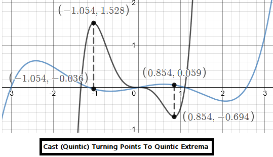
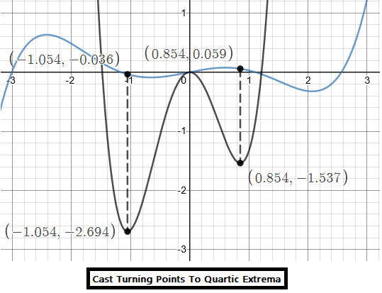
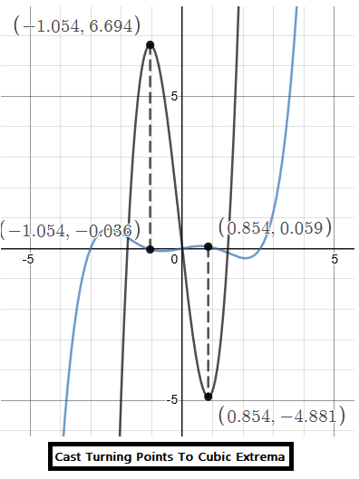
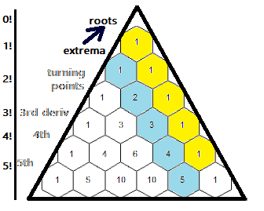

This is not really ready for explainer-level yet. You should understand derivatives and antiderivatives for this text, i.e.:
Usually, integration / derivatives only go up/down a single degree (so, you're swapping roots and extrema).
In this document, by updating coefficients and the locator, we "cast" roots at any derivative level (e.g., all the extrema or roots) into any other derivative "root group" having enough "slots" to hold the cast -- including casts back into the same polynomial degree.
All we need is Pascal's Triangle diagonals and the ability to move the locator (see previous post).
In pictures, this is what I mean. The blue function is a quintic, and I am directly "casting" its two quadratic (third-derivative) roots to the extrema of a quintic, quartic and cubic.



TODO: LaTeX: The above were done with fractions: (10,4,1 / 5,4,3), (10,4,1 / 4,3,2) and (10,4,1 / 3,2,1) respectively.
.... TODO: Err...quintics traditionally have 3 turning points, and 2 of whatever it's called above that. I mislabeld the images.
Multiple derivatives and integrals can be combined into one step using Pascal's Triangle diagonals.
Here we have a quintic equation:
\(x^{5}+2x^{4}+-x^{3}-2x^{2}+x+1\)
Its derivative and an equivalent are:
\(\left(5\right)x^{4\ }+\ \left(4\right)2x^{3}-\left(3\right)x^{2}-\left(2\right)2x^{1}+\left(1\right)1\)
\(\left(\frac{5}{1}\right)x^{4}+\left(\frac{4}{1}\right)2x^{3}-\left(\frac{3}{1}\right)x^{2}-\left(\frac{2}{1}\right)2x^{1}+\left(\frac{1}{1}\right)1\)
The fractions can be constructed from Pascal's Triangle diagonals:
\(\frac{5,\ 4,\ 3,\ 2,\ 1}{1,\ 1,\ 1,\ 1,\ 1}\) under the operation "extrema" to "roots".

We can also take the second derivative in one step:
...TODO: WIP
You may have noticed that the quadratic-root and cubic-extrema equations differ by only two numbers:
| \[x = {-b \pm \sqrt{b^2-{\color{orange}4}ac} \over {\color{orange}2}a}\] | \[x = {-b \pm \sqrt{b^2-{\color{orange}3}ac} \over {\color{orange}3}a}\] |
| \[x = {-b \pm \sqrt{b^2-{\color{orange}{8 \over 3}}ac} \over {\color{orange}4}a}\] | \[x = {-b \pm \sqrt{b^2-{\color{orange}{5 \over 2}}ac} \over {\color{orange}5}a}\] |
Demo Link: General Quadratic (desmos)
Demo Link: General Cubic (desmos)
TODO: ... can we simplify and generalize the quartic equation based on what we see above?